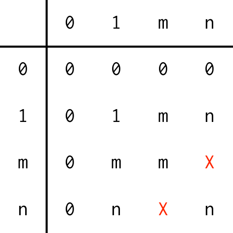

vec_recycle(x, size) recycles a single vector to given size.
vec_recycle_common(...) recycles multiple vectors to their common size.
All functions obey the vctrs recycling rules, described below, and will
throw an error if recycling is not possible. See vec_size() for the
precise definition of size.
vec_recycle(x, size, ..., x_arg = "") vec_recycle_common(..., .size = NULL)
| x | A vector to recycle. |
|---|---|
| size | Desired output size. |
| ... |
|
| x_arg | Argument name for |
| .size | Desired output size. If omitted,
will use the common size from |
The common size of two vectors defines the recycling rules, and can be summarise with the following table:

(Note NULLs are handled specially; they are treated like empty
arguments and hence don't affect the size)
This is a stricter set of rules than base R, which will usually
return output of length max(nx, ny), warning if the length of the longer
vector is not an integer multiple of the length of the shorter.
We say that two vectors have compatible size if they can be recycled to be the same length.
# Inputs with 1 observation are recycled vec_recycle_common(1:5, 5)#> [[1]] #> [1] 1 2 3 4 5 #> #> [[2]] #> [1] 5 5 5 5 5 #>#> [[1]] #> integer(0) #> #> [[2]] #> numeric(0) #>if (FALSE) { vec_recycle_common(1:5, 1:2) } # Data frames and matrices are recycled along their rows vec_recycle_common(data.frame(x = 1), 1:5)#> [[1]] #> x #> 1 1 #> 2 1 #> 3 1 #> 4 1 #> 5 1 #> #> [[2]] #> [1] 1 2 3 4 5 #>#> [[1]] #> [,1] [,2] #> [1,] 1 2 #> [2,] 1 2 #> [3,] 1 2 #> [4,] 1 2 #> [5,] 1 2 #> #> [[2]] #> [1] 1 2 3 4 5 #>#> [[1]] #> , , 1 #> #> [,1] [,2] [,3] #> [1,] 1 2 3 #> [2,] 1 2 3 #> [3,] 1 2 3 #> [4,] 1 2 3 #> [5,] 1 2 3 #> #> #> [[2]] #> [1] 1 2 3 4 5 #>